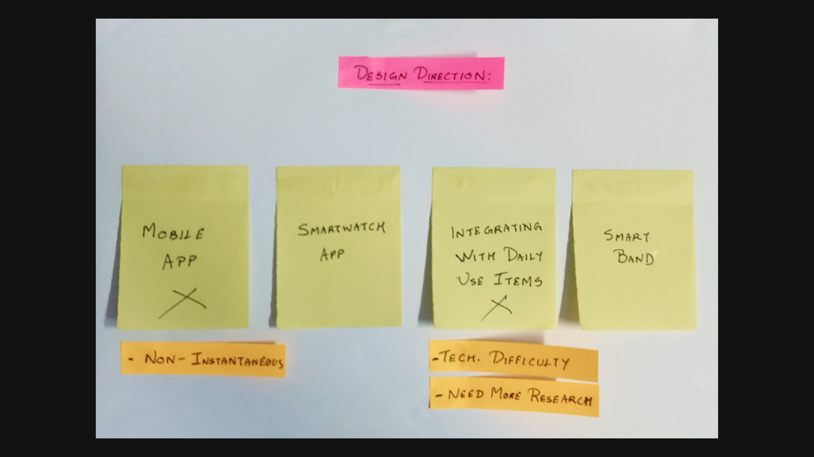

Role: UX/UI Designer
About:
Women’s safety has become a matter of prime concern in the present day. There is no resource more potent for growth than women’s empowerment. I, along with some of my batchmates, as a team, took part in a design sprint organized by DesignTab — The Official Design Club of NIT Rourkela. As a team, we designed an SOS app and product for enhanced women security.
Problem Statement
As a team, we had participated in the design sprint organized by DesignTab — The Official Design Club of NIT Rourkela. The sprint was held a day after the conduction of a session on The Basics of UX Design and Design Sprint. The allotted problem statement to all the teams was:
Design a service/product/app/etc. that should focus on women’s safety. You are free to choose any specific problem related to the broad genre of problems that exist in this field.
The Team
For the design sprint, I teamed up with three of my colleagues — Smithraj Karna, Sai Swarup Mohanty, and Rama Kushna Behera. Each of us had relative expertise in different fields, thereby creating a diverse group for the sprint.

Problem Analysis
Multiple consecutive team meetings were held to discuss the problem statement. Since Women’s Safety was too broad a topic, we had to focus our attention on any one of the prime issues under this category. Now that we had analyzed the problem, we decided to focus our attention since that would be helpful in case of an emergency(like attack, harassment, accident, etc.)
Understanding the Users
Upon conducting some stakeholder interviews and numerous team discussions, we were able to understand who would be the primary stakeholder for our solution. After this, we categorized various users with similar traits into different user groups.

Pain Points
Understanding the users helped us in understanding the pain points better. We were able to get a clearer insight into what were the major problems that they were facing and what could be the real reason behind them. The pain points were:

User Personas
We developed personas representing various user groups, highlighting their frustrations and needs. The user personas helped us empathize better with the target user, thereby helping us focus on a more user-centered design process.

Existing Solutions
We browsed through a range of existing solutions(related to this field) in the market. The existing solutions ranged from third-party apps to in-device programs. This phase helped us understand the shortcomings and advantages of various solutions and how we could improve upon those.

Features
Having gained a good insight into the users, problems they faced, and why some of the existing solutions worked, and some did not. We started brainstorming to find out a solution to the problem. We enlisted multiple features and prioritized the important ones. The planned out features for out solution were —
Sensor for Auto-Detection
3 sec. cancellation
Vibrate in “ON” state
GPS enabled
Cost-effective
More than one mode of usage
Easy to activate
Why two products? — Smartwatch App and SOS Band
Based on the user research, we established two user groups(based on possession of smartwatch) — one who owned a smartwatch and another one included those who did not have a smartwatch. Based on a brief market analysis, it was discovered that good quality smartwatches tend to be costlier than a band. To ensure that those who do not possess a smartwatch aren’t ignored, we came up with the concept of using a band.
User Flow
With the features decided, we planned the possible user flows that will exist in our solution. We decided on making two user flows for the solution — Manual and Automatic. Depending on the necessity of the user, either of the user flows were to be followed.